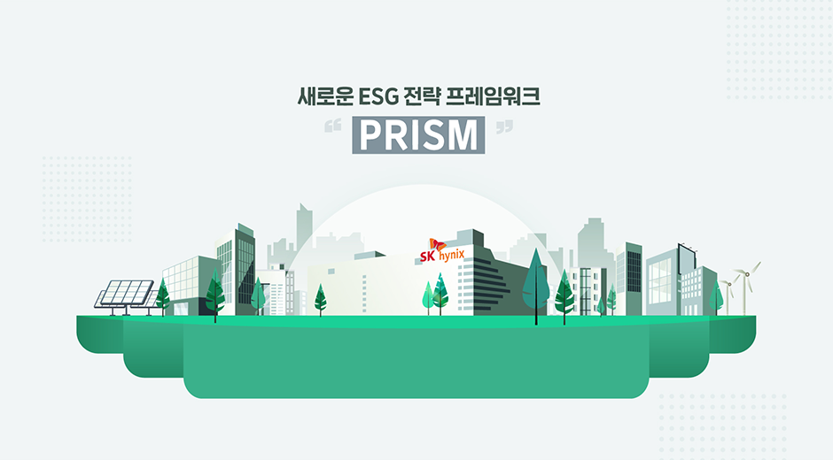

SK하이닉스 뉴스룸을 구독하세요
SK하이닉스가 전하는 산업 및 비즈니스 트렌드, 그리고 함께하는 세상의 다양한 이야기를 전합니다
'구독하기'를 통한 구독신청시 SK하이닉스에게 정보를 제공하는 것에 동의하는 것으로 간주하며, SK하이닉스가 제공하는 정보를 수신함을 의미합니다. 자세한 사항은 SK하이닉스 개인정보취급방침 및 이용약관을 참조해주세요.

SK하이닉스가 전하는 산업 및 비즈니스 트렌드, 그리고 함께하는 세상의 다양한 이야기를 전합니다
'구독하기'를 통한 구독신청시 SK하이닉스에게 정보를 제공하는 것에 동의하는 것으로 간주하며, SK하이닉스가 제공하는 정보를 수신함을 의미합니다. 자세한 사항은 SK하이닉스 개인정보취급방침 및 이용약관을 참조해주세요.